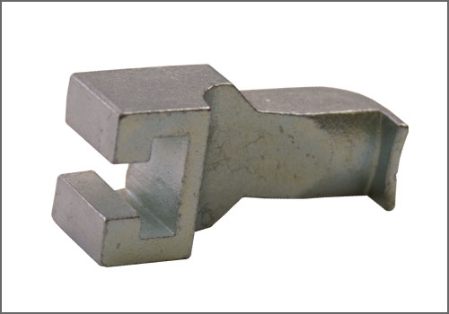

Puller Claw for VW 2.0 Turbo; Accessory Arm - AST Tool # T 40001-7
Puller Claw for VW 2.0 Turbo; Accessory Arm
AST tool# T 40001-7

Puller Claw - Accessory Arm used in conjunction with T 40001 Puller and T 40001-6 Arm. (Not part of the T 40001 kit; order separately.)
Applicable to:
VW/Audi: 2.0L 4V Direct Injection Engine (BPY) (BPG) (BWT); Used to remove Camshaft Gear / Wheel.
- Made in Germany
- Contact AST for pricing
- Applicable; VW/Audi 2.0L 4V Direct Injection Engine (BPY) (BPG) (BWT)
- Thin finger on end of Claw to fit into the tight area behind the Cam Wheel
Contact AST for pricing.
Assenmacher Specialty Tools
1-800-525-2943